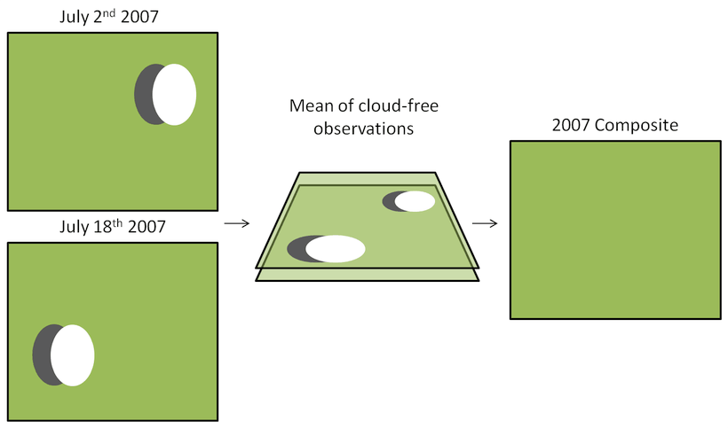
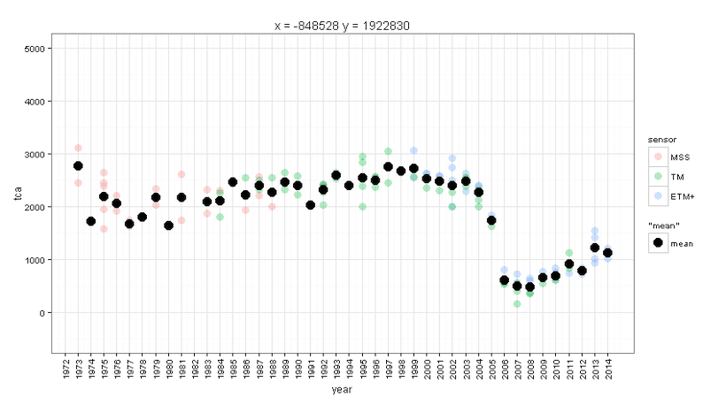
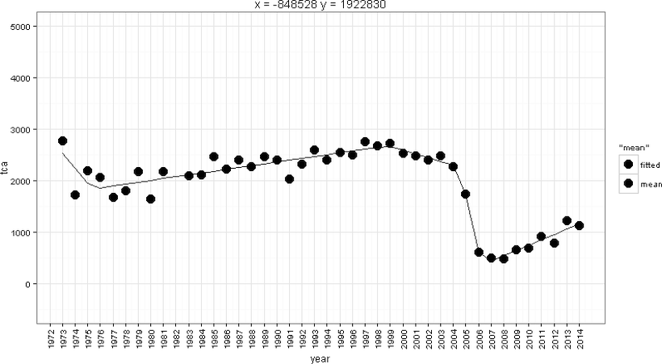
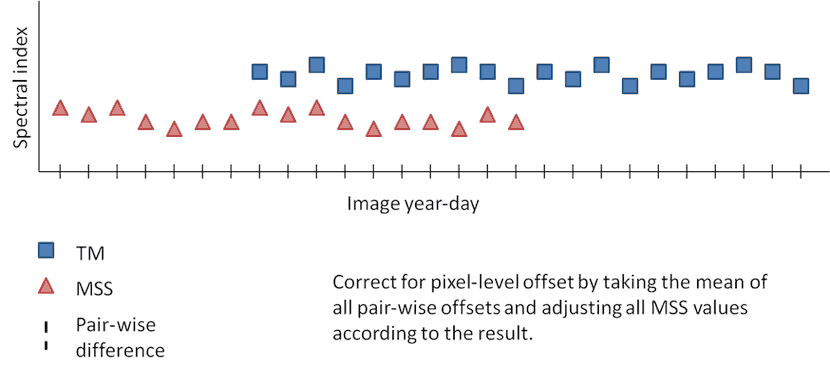

miXel
miXel is the image compositing component of the LLR system. It creates cloud-free annual composite images by blending multiple images from the same year together using the overlapping pixel mean and ignoring pixels identified as cloud, cloud shadow, or no data in the ETM+ SLC-OFF images in the calculation (Figure 1). In the case where all overlapping pixels are identified as obscured, the composite pixel is assigned a value of NA. Given a series of directory locations and an area-of-interest (AOI) raster file or xy corner coordinates, miXel looks through the given directories and finds images (and their corresponding cloud masks) that intersect the AOI. It organizes the images by year, and for each, creates a composite image and then clips that image to the extent of the AOI. It creates composites from modeled MSS tasseled cap indices, TM/ETM+ tasseled cap indices, and modeled OLI tasseled cap indices and writes them to a user-defined directory as both individual year files and as a time series stack with as many bands as there are years. Figure 2 shows a visual example of miXel mean composting for a single-pixel time series and Figure 3 shows an example of temporal fitting based on mean annual compositing.
Figure 1. Conceptual example of LLR miXel cloud-free compositing. Given multiple images from the same year and season, miXel creates a composite from the mean of all overlapping cloud-free observations.

Figure 2. Visual example of miXel mean composting for a single-pixel time series. Transparent colored dots are the original individual image pixel values and the black dots represent the mean value of the pixel values for each year.

Figure 3. Example of temporal fitting of composite values for a given pixel. Annual compositing along with temporal fitting produces a simplified representation of the pixel's spectral history. In this case the pixel experienced a spectral decline, followed by a recovery, a gradual decline that transitioned to a more rapid high magnitude decline, and finally another recovery.
Pixel-level adjustment
If MSS and OLI data are included in the composites, besides spectral calibration at the image level, a pixel-level adjustment is also made. This adjustment is made to the annual composites. First, for all annual composite years that are common between MSS and TM and/or ETM+ and OLI a difference image is created. The mean of all difference images (per pixel) is calculated, which is considered the mean offset between the two sets of sensors per pixel. This mean difference per pixel is then subtracted or added to all MSS and/or OLI composites that were created initially (Figure 4). This is a fine tuning method to better spectrally-temporally align very dark and very bright pixels. Figure 5 shows the pre- and post-adjustment pixel offset between sensors as measured by RMSE of the overlapping annual composite years for a sample of pixels. We see a slight decrease in RMSE after the pixel-level correction is made. This example is from tasseled cap angle composites.
Figure 4. Conceptual demonstration of how the mean pixel-level offset between common annual composite years for MSS and TM data is calculated and corrected.

Figure 5. Example of pixel-level offset for difference between common annual composite years for MSS and TM pre- and post-adjustment as measured by RMSE. This example is from tasseled cap angle data. We see that there is a reduction in RMSE when the pixel level adjustment is applied.
This method of pixel-level correction is based on the following manuscript: